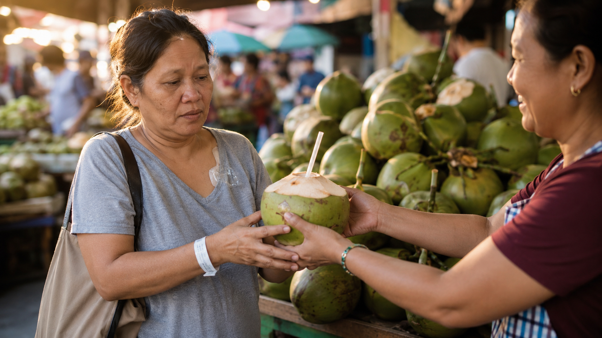
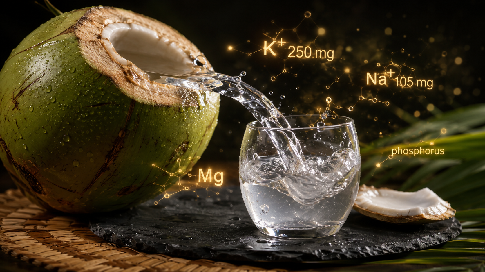
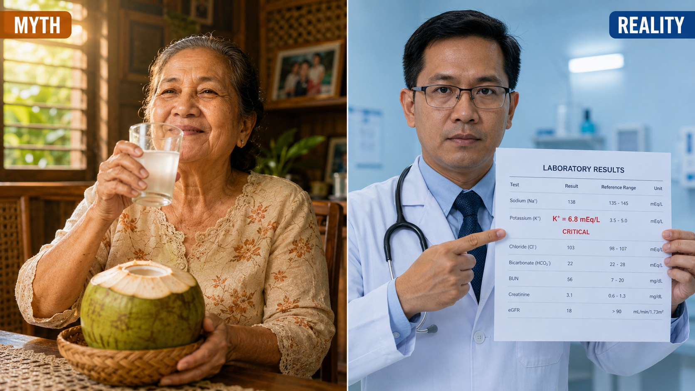
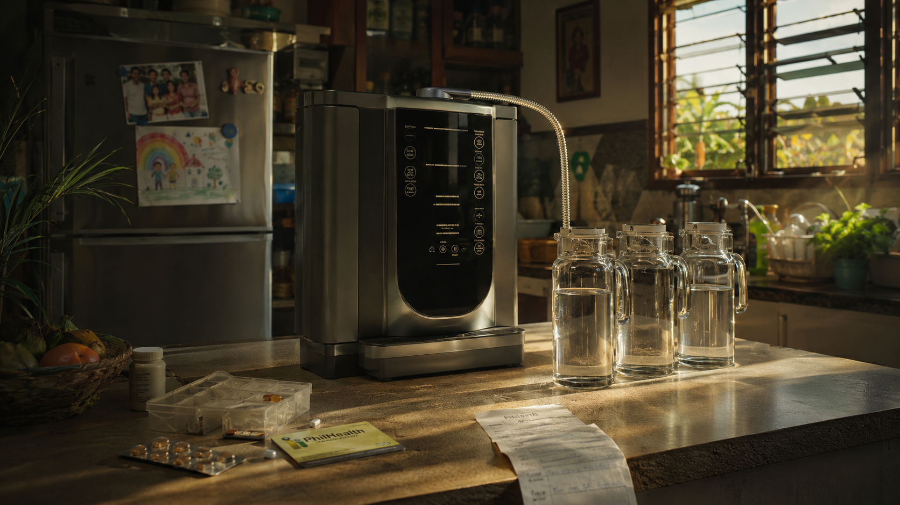
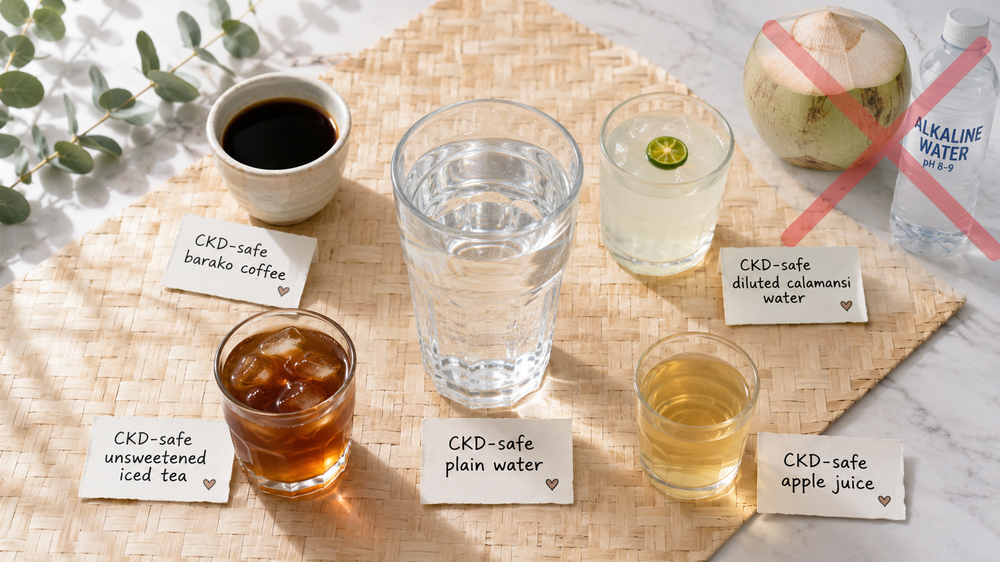

Buko Juice (Young Coconut Water) — What Is It Really?Buko Juice (Tubig ng Batang Niyog) — Ano Talaga Ito?Buko Juice (Tubig sa Bata nga Niyog) — Unsa Gyud Kini?Buko Juice (Danum ning Batang Niyog) — Ano Talaga Ini?

Buko juice — the clear liquid from young green coconuts — is one of the most beloved Filipino beverages and is widely marketed as a "natural health drink," a "kidney cleanser," and an "electrolyte replenisher." For healthy people, many of these claims have merit. For CKD patients, buko juice can be dangerous — and in dialysis patients, potentially fatal. The reason comes down to one mineral: potassium.Ang buko juice — ang malinaw na likido mula sa mga batang berdeng niyog — ay isa sa mga pinaka-minamahal na inumin ng mga Pilipino at malawakang itinataguyod bilang "natural na inuming pangkalusugan," "kidney cleanser," at "electrolyte replenisher." Para sa mga malusog na tao, marami sa mga paghahabol na ito ay may katotohanan. Para sa mga pasyenteng may CKD, ang buko juice ay maaaring mapanganib — at sa mga pasyenteng nasa diyalisis, posibleng nakamamatay. Ang dahilan ay bumabalik sa isang mineral: potassium.Ang buko juice — ang hayag nga likido gikan sa mga bata nga berde nga niyog — usa sa mga pinaka-gihigugma nga inumon sa mga Pilipino ug kaylap nga gimarkahan isip "natural nga inumon sa kalusugan," "kidney cleanser," ug "electrolyte replenisher." Alang sa mga himsog nga tawo, daghang mga pagpangayo nga kini adunay katarungan. Alang sa mga pasyente nga adunay CKD, ang buko juice mahimong delikado — ug sa mga pasyente nga nagdiyal, posibleng nakamamatay. Ang hinungdan mokuha ngadto sa usa ka mineral: potassium.Ing buko juice — ing malinaw na likido mula sa deng batang berdeng niyog — ya isa king deng pinaka-minamahal na inumin ning deng Pilipino at malawakang itinataguyod bilang "natural na inuming pangkalusugan," "kidney cleanser," at "electrolyte replenisher." Para king deng malusog na tao, marami sa deng paghahabol na ini ya may katotohanan. Para king deng pasyenteng may CKD, ing buko juice ya maaaring mapanganib — at sa deng pasyenteng nasa diyalisis, posibleng nakamamatay. Ing dahilan ya bumabalik sa metung a mineral: potassium.
A single 240 mL glass of fresh buko juice contains approximately 600 mg of potassium. For a dialysis patient on a 1,500 mg daily potassium restriction, one glass uses up 40% of the entire day's allowance — before any food is eaten.Ang isang 240 mL na baso ng sariwang buko juice ay naglalaman ng humigit-kumulang 600 mg ng potassium. Para sa isang pasyenteng nasa diyalisis na may 1,500 mg na araw-araw na limitasyon sa potassium, ang isang baso ay gumagamit ng 40% ng buong araw-araw na allowance — bago pa man kumain ng anumang pagkain.Ang usa ka 240 mL nga baso sa presko nga buko juice naglangkob ug halos 600 mg sa potassium. Alang sa usa ka pasyente nga nag-dialysis nga adunay 1,500 mg nga adlaw-adlaw nga limitasyon sa potassium, ang usa ka baso mogamit ug 40% sa tibuok adlaw-adlaw nga allowance — sa wala pa mokaon ug bisan unsang pagkaon.Ing metung a 240 mL na baso ning sariwang buko juice ya naglalaman ning humigit-kumulang 600 mg ning potassium. Para king metung a pasyenteng nasa diyalisis na may 1,500 mg na aldo-aldo na limitasyon sa potassium, ing metung a baso ya gumagamit ning 40% ning buoning aldo-aldo na allowance — bago pa man kumain ning anumaning pamangan.

Why Potassium Is Dangerous in CKDBakit Mapanganib ang Potassium sa CKDNganong Delikado ang Potassium sa CKDBakit Mapanganib ing Potassium sa CKD
Healthy kidneys excrete excess potassium continuously in the urine. CKD kidneys cannot — potassium accumulates in the blood. The heart is exquisitely sensitive to serum potassium levels. Hyperkalemia (high blood potassium) causes life-threatening cardiac arrhythmias — often without warning symptoms.Ang malusog na mga bato ay tuloy-tuloy na naglalabas ng labis na potassium sa ihi. Hindi kaya ng mga batong may CKD — nag-iipon ang potassium sa dugo. Ang puso ay sobrang sensitibo sa antas ng potassium sa serum. Ang hyperkalemia (mataas na potassium sa dugo) ay nagdudulot ng mapanganib sa buhay na cardiac arrhythmias — kadalasan nang walang mga babala.Ang himsog nga mga kidney tuloy-tuloy nga naglabas sa sobra nga potassium sa ihi. Ang mga kidney nga may CKD dili makahimo — nag-iipon ang potassium sa dugo. Ang kasingkasing labihan ka-sensitibo sa antas sa potassium sa serum. Ang hyperkalemia (taas nga potassium sa dugo) nagdulot ug nagahadlok sa kinabuhi nga cardiac arrhythmias — kasagaran nga walay mga babala.Ing malusog na dening batu ya tuloy-tuloy na naglalabas ning labis na potassium sa ihi. Ali kaya ning dening batung may CKD — nag-iipon ing potassium sa daya. Ining pusu ya sobrang sensitibo sa antas ning potassium sa serum. Ing hyperkalemia (matas a potassium sa daya) ya nagdudulot ning mapanganib sa biye na cardiac arrhythmias — kadalasan nang waldeng babala.
Unlike blood sugar which has gradual effects, hyperkalemia can cause sudden cardiac arrest without warning. Dialysis removes potassium during sessions, but between sessions the kidneys cannot excrete it — making diet the only protection.Hindi katulad ng asukal sa dugo na may gradwal na epekto, ang hyperkalemia ay maaaring magdulot ng biglaang cardiac arrest nang walang babala. Tinatanggal ng diyalisis ang potassium sa panahon ng mga sesyon, ngunit sa pagitan ng mga sesyon ang mga bato ay hindi makapag-labas nito — na ginagawang diyeta lamang ang tanging proteksyon.Dili sama sa asukal sa dugo nga adunay gradwal nga epekto, ang hyperkalemia mahimong magdulot ug kalit nga cardiac arrest nga walay babala. Gikuha sa dialysis ang potassium sa panahon sa mga sesyon, apan tali sa mga sesyon ang mga kidney dili makahimo og paglabas niini — nga ang diyeta lamang ang mao ang proteksyon.Ali katulad ning asukal sa daya na may gradwal na epekto, ing hyperkalemia ya maaaring magdulot ning biglaang cardiac arrest nang alang babala. Tinatanggal ning diyalisis ing potassium sa panahon ning deng sesyon, ngarud sa pagitan ning deng sesyon dening batu ya ali manung-labas nini — na ginagawang diyeta lamang ing tanging proteksyon.
Cardiac arrest from buko juice — this has actually happenedCardiac arrest mula sa buko juice — nangyari ito talagaCardiac arrest gikan sa buko juice — nahinabo gyud kiniCardiac arrest mula sa buko juice — nangyari ini talaga
Multiple documented cases exist in nephrology literature — and in Philippine clinical practice — of dialysis patients dying from hyperkalemia-induced cardiac arrest after drinking buko juice or coconut water. One or two large glasses can raise serum potassium by 1–2 mEq/L in a fluid-restricted dialysis patient. Combined with a missed dialysis session or a high-potassium meal, this can be fatal. This is not theoretical.Mayroon maraming dokumentadong kaso sa nephrology literature — at sa klinikal na pagsasanay sa Pilipinas — ng mga pasyenteng nasa diyalisis na namatay mula sa hyperkalemia-induced cardiac arrest pagkatapos uminom ng buko juice o coconut water. Ang isa o dalawang malalaking baso ay maaaring magtaas ng serum potassium ng 1–2 mEq/L sa isang pasyenteng nasa diyalisis na may limitasyon sa likido. Kasama ng isang napalampas na sesyon ng diyalisis o isang pagkain na may mataas na potassium, maaari itong maging nakamamatay. Hindi ito teorya.Adunay daghang dokumentadong mga kaso sa nephrology literature — ug sa klinikal nga pagsabay sa Pilipinas — sa mga pasyente nga nag-dialysis nga namatay gikan sa hyperkalemia-induced cardiac arrest pagkahuman moinom ug buko juice o coconut water. Ang usa o duha ka dagkong baso makataas sa serum potassium ug 1–2 mEq/L sa usa ka pasyente nga nag-dialysis nga adunay limitasyon sa likido. Gisagol sa usa ka napalampas nga sesyon sa dialysis o usa ka pagkaon nga taas ang potassium, kini mahimong nakamamatay. Dili kini teorya.Mayroon dacal a dokumentadong kaso sa nephrology literature — at king klinikal na pagsasanay king Pilipinas — ning deng pasyenteng nasa diyalisis na namatay mula sa hyperkalemia-induced cardiac arrest kapabanuan uminom ning buko juice o coconut water. Ing isa o dalawang malalaking baso ya maaaring magtaas ning serum potassium ning 1–2 mEq/L sa metung a pasyenteng nasa diyalisis na may limitasyon sa likido. Kasama ning metung a napalampas na sesyon ning diyalisis o metung a pamangan na may matas a potassium, maaari ining maging nakamamatay. Ali ini teorya.
Buko Juice Claims — Myth-Busting for CKD PatientsMga Paghahabol sa Buko Juice — Pagbibitag ng Mito para sa mga Pasyenteng may CKDMga Pagpangayo sa Buko Juice — Pagbuak sa Mito alang sa mga Pasyente nga adunay CKDDeng Paghahabol sa Buko Juice — Pagbibitag ning Mini para king deng Pasyenteng may CKD

The Buko Juice Verdict by CKD StageAng Hatol sa Buko Juice Ayon sa CKD StageAng Hatol sa Buko Juice Sumala sa CKD StageIng Hatol sa Buko Juice Ayon sa CKD Stage
| CKD StageCKD StageCKD StageCKD Stage | eGFR | Serum K+ normal?Serum K+ normal?Serum K+ normal?Serum K+ normal? | Buko juiceBuko juiceBuko juiceBuko juice |
|---|---|---|---|
| Stage 1–2 | >60 mL/min | Yes (<5.0)Oo (<5.0)Oo (<5.0)Oo (<5.0) | Occasional small serving (½ baso) likely safe — not dailyPaminsan-minsang maliit na serving (½ baso) malamang ligtas — hindi araw-arawPanagsagol nga gamay nga serving (½ baso) lagmit luwas — dili adlaw-adlawPamisan-misang maliit na serving (½ baso) malamang ligtas — ali aldo-aldo |
| Stage 3a | 45–59 | YesOoOoOo | Very small amounts occasionally — monitor serum K+ closelyNapakaliit na halaga paminsan-minsan — bantayan nang mabuti ang serum K+Gamay kaayo nga kantidad panagsagol — pag-atiman pag-ayo ang serum K+Napakaliit na halaga pamisan-misan — bantayan nang mabuti ing serum K+ |
| Stage 3b | 30–44 | Any levelAnumang antasBisan unsang antasAnumang antas | Avoid — discuss with nephrologist before any consumptionIwasan — kausapin ang nephrologist bago uminom ng anumang halagaIlikay — hisguti sa nephrologist sa wala pa imnon bisan unsang kantidadIwasan — kausapin ing nephrologist bago uminom ning anumang halaga |
| Stage 4–5 | <30 | Any levelAnumang antasBisan unsang antasAnumang antas | Contraindicated — do not drinkKontraindikadon — huwag uminomKontraindikadon — ayaw imnonKontraindikadon — eka uminom |
| Hemodialysis | ~0–10 | Any levelAnumang antasBisan unsang antasAnumang antas | Strictly prohibitedMahigpit na ipinagbabawalGinadili sa bug-osMahigpit na ipinagbabawal — cardiac arrest riskpanganib ng cardiac arrestpeligro sa cardiac arrestpanganib ning cardiac arrest |
| Peritoneal Dialysis | ~0–15 | Any levelAnumang antasBisan unsang antasAnumang antas | Strictly prohibitedMahigpit na ipinagbabawalGinadili sa bug-osMahigpit na ipinagbabawal — same risk as HDparehong panganib tulad ng HDsama nga peligro sa HDparehong panganib tulad ning HD |
| Post-Transplant (stable, good function)Post-Transplant (matatag, maayos ang pag-andar)Post-Transplant (maarig, maayo ang pag-andar)Post-Transplant (matatag, maayos ing pag-andar) | >50 | YesOoOoOo | Small amounts may be acceptable — confirm with transplant nephrologistMaliit na halaga maaaring katanggap-tanggap — kumpirmahin sa transplant nephrologistGamay nga kantidad mahimong dawaton — pag-usapan sa transplant nephrologistMaliit na halaga maaaring katanggap-tanggap — kumpirmahin sa transplant nephrologist |
What about "buko sarap" or flavored coconut drinks?Paano ang "buko sarap" o mga flavored coconut drinks?Unsa man ang "buko sarap" o mga flavored coconut drinks?Paano ing "buko sarap" o deng flavored coconut drinks?
Processed coconut water drinks (Zesto Buko, Coco Pandan, flavored buko drinks) contain added sugar and preservatives in addition to coconut water. They have the same potassium content as fresh buko juice, plus additional sodium from preservatives and phosphate from additives. These are not safer alternatives — they are equally or more problematic for CKD patients.Ang mga processed coconut water drinks (Zesto Buko, Coco Pandan, flavored buko drinks) ay naglalaman ng dagdag na asukal at preservatives bilang karagdagan sa coconut water. Mayroon silang parehong nilalaman ng potassium tulad ng sariwang buko juice, kasama ang dagdag na sodium mula sa preservatives at phosphate mula sa mga additives. Hindi sila mas ligtas na mga alternatibo — pantay o mas may problema sila para sa mga pasyenteng may CKD.Ang mga processed coconut water drinks (Zesto Buko, Coco Pandan, flavored buko drinks) adunay dugang nga asukal ug preservatives dugang sa coconut water. Adunay sila sama nga sulod sa potassium sama sa presko nga buko juice, dugang ang sobrang sodium gikan sa preservatives ug phosphate gikan sa mga additives. Kini dili mas luwas nga mga alternatibo — pantay o mas may problema kini alang sa mga pasyente nga adunay CKD.Deng processed coconut water drinks (Zesto Buko, Coco Pandan, flavored buko drinks) ya naglalaman ning dagdag na asukal at preservatives bilang karagdagan sa coconut water. Mayroon silang parehong nilalaman ning potassium tulad ning sariwang buko juice, kasama ing dagdag na sodium mula sa preservatives at phosphate mula sa deng additives. Ali sila mas ligtas na deng alternatibo — pantay o mas may problema sila para king deng pasyenteng may CKD.
Alkaline Water — What Are the Claims?Alkaline Water — Ano ang mga Inaangkin?Alkaline Water — Unsa ang mga Gi-angkon?Alkaline Water — Ano deng Inaangkin?
Alkaline water (pH 8–9.5) is heavily marketed in the Philippines through multilevel marketing networks, water refilling stations, and social media. It is sold with claims ranging from anti-aging to cancer prevention to kidney protection. Here is what the claims are — and what the evidence actually shows.Ang alkaline water (pH 8–9.5) ay agresibong ibinebenta sa Pilipinas sa pamamagitan ng mga network ng multilevel marketing, mga water refilling station, at social media. Ibinebenta ito na may mga claim na mula sa anti-aging hanggang sa pag-iwas sa kanser hanggang sa proteksyon ng bato. Narito ang mga claim — at kung ano talaga ang ipinapakita ng ebidensya.Ang alkaline water (pH 8–9.5) grabe nga gi-merkado sa Pilipinas pinaagi sa mga network sa multilevel marketing, mga water refilling station, ug social media. Gibaligya kini nga adunay mga claim nga gikan sa anti-aging hangtud sa pagpugong sa kanser hangtud sa proteksyon sa kidney. Ania ang mga claim — ug kung unsa talaga ang gipakita sa ebidensya.Ing alkaline water (pH 8–9.5) ya agresibong ibinebenta king Pilipinas sa pamamagitan ning deng network ning multilevel marketing, deng water refilling station, at social media. Ibinebenta ini na may deng claim na mula sa anti-aging anggang sa pag-iwas sa kanser anggang sa proteksyon nining batu. Narini deng claim — at nung ano talaga ing ipinapakita ning ebidensya.
What "alkaline water" actually isAno talaga ang "alkaline water"Unsa gyud ang "alkaline water"Ano talaga ing "alkaline water"
Water with a pH above 7.0 — typically achieved through electrolysis (ionizers), mineral addition (calcium, magnesium bicarbonate), or bicarbonate tablets. Regular tap water is pH 6.5–8.5. The stomach immediately acidifies anything you drink to pH ~2.0 — so the alkalinity of the water is neutralized before it reaches the bloodstream.Tubig na may pH na higit sa 7.0 — karaniwang nakamit sa pamamagitan ng electrolysis (mga ionizer), pagdaragdag ng mineral (calcium, magnesium bicarbonate), o bicarbonate tablets. Ang karaniwang tubig mula sa gripo ay pH 6.5–8.5. Agad na inaasidulin ng tiyan ang anumang inumin mo sa pH ~2.0 — kaya ang alkalinity ng tubig ay na-neutralize bago pa maabot ang daluyan ng dugo.Tubig nga adunay pH nga labaw sa 7.0 — kasagaran nakab-ot pinaagi sa electrolysis (mga ionizer), pagdugang sa mineral (calcium, magnesium bicarbonate), o bicarbonate tablets. Ang regular nga tubig sa gripo adunay pH 6.5–8.5. Ang tiyan dayon nag-asidify sa bisan unsa nga imong giinom ngadto sa pH ~2.0 — mao nga ang alkalinity sa tubig gi-neutralize sa wala pa makaabut sa dugo.Danum na may pH na higit sa 7.0 — karaniwang nakamit sa pamamagitan ning electrolysis (mga ionizer), pagdaragdag ning mineral (calcium, magnesium bicarbonate), o bicarbonate tablets. Ing karaniwaning danum mula sa gripo ya pH 6.5–8.5. Agad na inaasidulin ning tiyan ing anumang inumin mo sa pH ~2.0 — kaya ing alkalinity nining danum ya na-neutralize bago pa maabot ing daluyan nining daya.
Common marketing claimsMga karaniwang marketing claimMga komon nga marketing claimDeng karaniwang marketing claim
"Neutralizes acid in the body" · "Prevents cancer" · "Anti-aging antioxidant" · "Cleanses kidneys" · "Balances body pH" · "Improves hydration better than regular water" · "Reverses CKD" · "Reduces creatinine." These claims are circulated through Facebook groups, YouTube, and water delivery marketing."Ninu-neutralize ang asido sa katawan" · "Pumipigil sa kanser" · "Anti-aging antioxidant" · "Nililinis ang mga bato" · "Binabalanse ang pH ng katawan" · "Nagpapabuti ng hydration nang mas mabuti kaysa sa karaniwang tubig" · "Binabaliktad ang CKD" · "Binabawasan ang creatinine." Ang mga claim na ito ay kumakalat sa pamamagitan ng mga Facebook group, YouTube, at marketing ng water delivery."Gi-neutralize ang asido sa lawas" · "Nagpugong sa kanser" · "Anti-aging antioxidant" · "Gilimpyuhan ang mga kidney" · "Gi-balanse ang pH sa lawas" · "Nagpabuti sa hydration nga mas maayo kaysa sa regular nga tubig" · "Gibaligtad ang CKD" · "Gibawasan ang creatinine." Kining mga claim gipakatap pinaagi sa mga Facebook group, YouTube, ug marketing sa water delivery."Ninu-neutralize ing asido sa bangkî" · "Pumipigil sa kanser" · "Anti-aging antioxidant" · "Nililinis dening batu" · "Binabalanse ing pH nining bangkî" · "Nagpapabuti ning hydration nang mas mabuti kaysa sa karaniwaning danum" · "Binabaliktad ing CKD" · "Binabawasan ing creatinine." Deng claim na ini ya kumakalat sa pamamagitan ning deng Facebook group, YouTube, at marketing ning water delivery.
The business model mattersMahalaga ang business modelImportante ang business modelMahalaga ing business model
Many alkaline water products in the Philippines are sold through multi-level marketing (MLM) or franchise refilling stations. Financial incentives to sell — not evidence of efficacy — drive the aggressive marketing. The fact that something is expensive and heavily promoted does not mean it has health benefits. Ask: "Where are the published clinical trials?"Maraming produktong alkaline water sa Pilipinas ang ibinebenta sa pamamagitan ng multi-level marketing (MLM) o franchise na refilling station. Ang mga financial incentive na magbenta — hindi ang ebidensya ng bisa — ang nagtutulak sa agresibong marketing. Ang katotohanan na ang isang bagay ay mahal at agresibong pino-promote ay hindi nangangahulugang mayroon itong benepisyo sa kalusugan. Itanong: "Saan ang mga nailathala na clinical trial?"Daghang produkto sa alkaline water sa Pilipinas gibaligya pinaagi sa multi-level marketing (MLM) o franchise refilling station. Ang mga financial incentive sa pagbaligya — dili ang ebidensya sa kahusayan — ang nagtulod sa agresibong marketing. Ang kamatuoran nga ang usa ka butang mahal ug grabe nga gi-promote dili nagpasabut nga adunay mga benepisyo sa kahimsog. Pangutana: "Hain ang mga nailathala nga clinical trial?"Maraming produktong alkaline water king Pilipinas ing ibinebenta sa pamamagitan ning multi-level marketing (MLM) o franchise na refilling station. Deng financial incentive na magbenta — ali ing ebidensya ning bisa — ing nagtutulak sa agresibong marketing. Ing katotohanan na ing metung a bagay ya mahal at agresibong pino-promote ya ali nangangahulugang mayroon ining benepisyo sa kalusugan. Itanong: "Saan deng nailathala na clinical trial?"
Alkaline Water — Applying the ScienceAlkaline Water — Paglalapat ng AghamAlkaline Water — Paggamit sa SiyensyaAlkaline Water — Paglalapat ning Agham
The human body maintains blood pH between 7.35–7.45 with extraordinary precision through the respiratory and renal buffering systems. A deviation of just 0.1 pH units causes serious symptoms. The pH of what you drink has no measurable effect on blood pH in a healthy person.Ang katawan ng tao ay nagpapanatili ng blood pH sa pagitan ng 7.35–7.45 nang may kahanga-hangang katumpakan sa pamamagitan ng respiratory at renal buffering system. Ang paglihis ng 0.1 pH unit lamang ay nagdudulot ng malubhang sintomas. Ang pH ng inyong inumin ay walang masusukat na epekto sa blood pH ng isang malusog na tao.Ang lawas sa tawo nagmentena sa blood pH tali sa 7.35–7.45 nga adunay talagsaon nga katukma pinaagi sa respiratory ug renal buffering system. Ang paglihok sa 0.1 pH unit lamang nagdala sa grabe nga mga sintoma. Ang pH sa imong giinom walay masukod nga epekto sa blood pH sa usa ka himsog nga tawo.Ining bangkî ning tao ya nagpapanatili ning blood pH sa pagitan ning 7.35–7.45 nang may kahanga-hangang katumpakan sa pamamagitan ning respiratory at renal buffering system. Ing paglihis ning 0.1 pH unit lamang ya nagdudulot ning malubhang sintomas. Ing pH ning inyong inumin ya alang masusukat na epekto sa blood pH ning metung a malusog na tao.
Alkaline Water in CKD — Specific ConcernsAlkaline Water sa CKD — Mga Tiyak na AlalahaninAlkaline Water sa CKD — Mga Tiyak nga KabalakaAlkaline Water sa CKD — Deng Tiyak na Alalahanin

The one scenario where alkaline water has a basis — metabolic acidosisAng isang sitwasyon kung saan may batayan ang alkaline water — metabolic acidosisAng usa ka sitwasyon kung diin adunay batayan ang alkaline water — metabolic acidosisIng metung a sitwasyon nung saan may batayan ing alkaline water — metabolic acidosis
CKD Stage 3–5 patients frequently develop metabolic acidosis — a real reduction in blood bicarbonate from impaired renal acid excretion. This IS a genuine concern that requires treatment. However, the treatment is sodium bicarbonate tablets (prescribed by your nephrologist) or increased intake of dietary bases (fruits and vegetables) — not alkaline water. Alkaline water at pH 8–9 contains negligible buffering capacity compared to pharmaceutical bicarbonate.Ang mga pasyenteng CKD Stage 3–5 ay madalas na nagkakaroon ng metabolic acidosis — isang tunay na pagbaba ng bicarbonate sa dugo mula sa sirang renal acid excretion. Ito ay isang tunay na alalahanin na nangangailangan ng paggamot. Gayunpaman, ang paggamot ay sodium bicarbonate tablets (inireseta ng inyong nephrologist) o pagtaas ng paggamit ng dietary bases (prutas at gulay) — hindi alkaline water. Ang alkaline water sa pH 8–9 ay naglalaman ng napakaliit na buffering capacity kumpara sa pharmaceutical bicarbonate.Ang mga pasyente nga CKD Stage 3–5 kanunay nagpalambo ug metabolic acidosis — usa ka tinuod nga pagkunhod sa bicarbonate sa dugo gikan sa nasamok nga renal acid excretion. Kini usa ka tinuod nga kabalaka nga nanginahanglan ug pagtambal. Bisan pa, ang pagtambal mao ang sodium bicarbonate tablets (gi-prescribe sa imong nephrologist) o pagtaas sa pagkaon sa dietary bases (mga prutas ug gulay) — dili alkaline water. Ang alkaline water sa pH 8–9 adunay napakagamay nga buffering capacity kumpara sa pharmaceutical bicarbonate.Deng pasyenteng CKD Stage 3–5 ya madalas na nagkakaroon ning metabolic acidosis — metung a tunay na pagbaba ning bicarbonate sa daya mula sa sirang renal acid excretion. Ini ya metung a tunay na alalahanin na nangangailangan ning paggamut. Gayunpaman, ing paggamut ya sodium bicarbonate tablets (inireseta ning inyong nephrologist) o pagtaas ning paggamit ning dietary bases (prutas at gulay) — ali alkaline water. Ing alkaline water sa pH 8–9 ya naglalaman ning napakaliit na buffering capacity kumpara king pharmaceutical bicarbonate.
Potential harms from alkaline water in CKDMga posibleng pinsala ng alkaline water sa CKDMga posibleng kadaot sa alkaline water sa CKDDeng posibleng pinsala ning alkaline water sa CKD
Some ionized alkaline water machines add potassium to raise pH — directly dangerous in CKD. Some mineral-enriched alkaline waters contain extra calcium or phosphorus — problematic for CKD-MBD management. The greatest harm is not chemical — it is financial and behavioral: spending ₱3,000–₱10,000/month on water instead of medications, and believing the water is treating their CKD while the actual disease progresses untreated.Ang ilang ionized alkaline water machine ay nagdadagdag ng potassium para itaas ang pH — direktang mapanganib sa CKD. Ang ilang mineral-enriched alkaline water ay naglalaman ng dagdag na calcium o phosphorus — may problema para sa pamamahala ng CKD-MBD. Ang pinakamataas na pinsala ay hindi kemikal — ito ay pinansyal at pangkilos: paggugol ng ₱3,000–₱10,000/buwan sa tubig sa halip na mga gamot, at paniniwala na ginagamot ng tubig ang kanilang CKD habang ang tunay na sakit ay nagpapatuloy nang walang paggamot.Ang uban nga ionized alkaline water machine nagdugang ug potassium aron mapataas ang pH — direktang delikado sa CKD. Ang uban nga mineral-enriched alkaline water adunay dugang nga calcium o phosphorus — may problema alang sa pagdumala sa CKD-MBD. Ang pinakadaghang kadaot dili kemikal — kini pinansyal ug pangkinaiya: paggasto ug ₱3,000–₱10,000/buwan sa tubig imbes sa mga tambal, ug pagtuo nga ang tubig nagtambal sa ilang CKD samtang ang tinuod nga sakit nagpadayon nga wala natambali.Ing ilang ionized alkaline water machine ya nagdadagdag ning potassium para itaas ing pH — direktang mapanganib sa CKD. Ing ilang mineral-enriched alkaline water ya naglalaman ning dagdag na calcium o phosphorus — may problema para king pamamahala ning CKD-MBD. Ing pinakamatas a pinsala ya ali kemikal — ini ya pinansyal at pangkilos: paggugol ning ₱3,000–₱10,000/bulan sa danum sa halip na dening gamut, at paniniala na ginagamut nining danum ing kanilang CKD habang ing tunay na sakit ya nagpapatuloy nang alang paggamut.
The biggest danger of alkaline water in CKD is not the water itselfAng pinakamalaking panganib ng alkaline water sa CKD ay hindi ang tubig mismoAng pinakadaghang peligro sa alkaline water sa CKD dili ang tubig mismoIng pinakamalda a panganib ning alkaline water sa CKD ya ali ining danum mismo
Patients who believe alkaline water is treating their CKD may stop or reduce their medications, skip nephrology follow-ups, or feel falsely reassured about their progression. We have seen patients reach dialysis who delayed seeking proper treatment because they were "managing" with alkaline water. False hope delays real treatment — and with kidney disease, delay is permanently damaging.Ang mga pasyenteng naniniwala na ginagamot ng alkaline water ang kanilang CKD ay maaaring ihinto o bawasan ang kanilang mga gamot, laktawan ang mga follow-up sa nephrology, o maramdamang huwad na katiyakan tungkol sa kanilang progresyon. Nakita namin ang mga pasyenteng umabot sa diyalisis na naantala ang paghahanap ng wastong paggamot dahil "pinamamahalaan" nila ang kanilang kondisyon gamit ang alkaline water. Ang huwad na pag-asa ay nagpapantala ng tunay na paggamot — at sa sakit sa bato, ang pagkaantala ay permanenteng nakakasama.Ang mga pasyente nga nagtuo nga ang alkaline water nagtambal sa ilang CKD mahimong mohunong o magpababa sa ilang mga tambal, makalaktaw sa mga nephrology follow-up, o mobati ug bakak nga kasiguroan bahin sa ilang pagkusog. Nakita namo ang mga pasyente nga nakaabut sa dialysis nga nalangan sa pagpangita ug husto nga pagtambal tungod kay "gidumala" nila ang ilang kondisyon gamit ang alkaline water. Ang bakak nga paglaum nagpalangan sa tinuod nga pagtambal — ug sa sakit sa kidney, ang pagpaantala permanenteng makadaot.Deng pasyenteng naniniala na ginagamut ning alkaline water ing kanilang CKD ya maaaring ihinto o bawasan ing kanildening gamut, laktawan deng follow-up sa nephrology, o maramdamang huwad na katiyakan tungkol sa kanilang progresyon. Nakita namin deng pasyenteng umabot sa diyalisis na naantala ing paghahanap ning wastong paggamut dahil "pinamamahalaan" nila ing kanilang kondisyon gamit ing alkaline water. Ing huwad na pag-asa ya nagpapantala ning tunay na paggamut — at sa sakit sa batu, ing pagkaantala ya permanenteng nakakasama.
What Should CKD Patients Actually Drink?Ano Talaga ang Dapat Inumin ng mga Pasyenteng May CKD?Unsa Gyud ang Dapat Imnon sa mga Pasyente nga Adunay CKD?Ano Talaga ing Dapat Inumin ning deng Pasyenteng May CKD?

Plain purified or filtered waterSimpleng purified o filtered na tubigSimpleng purified o filtered nga tubigSimpleng purified o filtered na danum
The best beverage for most CKD patients. Purified or filtered tap water (Baguio, distilled, or well-filtered municipal water) hydrates identically to alkaline water at a fraction of the cost. For CKD Stage 1–3 without fluid restriction — aim for pale yellow urine as a hydration guide. Amount depends on your CKD stage and fluid restriction — ask your nephrologist.Ang pinakamainam na inumin para sa karamihan ng mga pasyenteng may CKD. Ang purified o filtered na tubig mula sa gripo (Baguio, distilled, o maayos na filtered na tubig ng munisipyo) ay nagbibigay ng parehong hydration tulad ng alkaline water sa isang bahagi ng gastos. Para sa CKD Stage 1–3 na walang fluid restriction — layunin ang maputlang dilaw na ihi bilang gabay sa hydration. Ang dami ay nakasalalay sa inyong CKD stage at fluid restriction — itanong sa inyong nephrologist.Ang pinaka-maayo nga inumon alang sa kadaghanan sa mga pasyente nga adunay CKD. Ang purified o filtered nga tubig sa gripo (Baguio, distilled, o maayo nga filtered nga tubig sa munisipyo) naghatag ug sama nga hydration sa alkaline water sa mas gamay nga gasto. Alang sa CKD Stage 1–3 nga walay fluid restriction — tumong sa mapulaw nga dilaw nga ihi isip gabay sa hydration. Ang kantidad nagdepende sa imong CKD stage ug fluid restriction — pangutana sa imong nephrologist.Ing pinakamainam na inumin para king karamihan ning deng pasyenteng may CKD. Ing purified o filtered na danum mula sa gripo (Baguio, distilled, o maayos na filtered na danum ning munisipyo) ya nagbibigay ning parehong hydration tulad ning alkaline water sa metung a bahagi ning gastos. Para king CKD Stage 1–3 na alang fluid restriction — layunin ing maputlang dilaw na ihi bilang gabay sa hydration. Ing dami ya nakasalalay king ka CKD stage at fluid restriction — itanong king ka nephrologist.
For metabolic acidosis — bicarbonate, not waterPara sa metabolic acidosis — bicarbonate, hindi tubigAlang sa metabolic acidosis — bicarbonate, dili tubigPara king metabolic acidosis — bicarbonate, ali danum
If your bicarbonate is low (<22 mEq/L), your nephrologist will prescribe sodium bicarbonate tablets. Increasing vegetable and fruit intake (within potassium limits for your CKD stage) also provides dietary bases. These interventions have actual clinical trial evidence for slowing CKD progression — alkaline water does not.Kung mababa ang inyong bicarbonate (<22 mEq/L), ang inyong nephrologist ay magre-reseta ng sodium bicarbonate tablets. Ang pagtaas ng pagkain ng gulay at prutas (sa loob ng mga limitasyon ng potassium para sa inyong CKD stage) ay nagbibigay din ng mga dietary base. Ang mga interbensyong ito ay may aktwal na clinical trial evidence para sa pagpapabagal ng pagsulong ng CKD — ang alkaline water ay wala.Kung ubos ang imong bicarbonate (<22 mEq/L), ang imong nephrologist mag-prescribe ug sodium bicarbonate tablets. Ang pagdugang sa pagkaon sa gulay ug prutas (sulod sa mga limitasyon sa potassium alang sa imong CKD stage) naghatag usab ug mga dietary base. Kining mga interbensyon adunay tinuod nga clinical trial evidence alang sa pagpabagal sa pagkusog sa CKD — ang alkaline water wala.Nung mababa ing inyong bicarbonate (<22 mEq/L), ing inyong nephrologist ya magre-reseta ning sodium bicarbonate tablets. Ing pagtaas nining pamangan ning gulay at prutas (sa loob ning deng limitasyon ning potassium para king inyong CKD stage) ya nagbibigay din ning deng dietary base. Deng interbensyong ini ya may aktwal na clinical trial evidence para king pagpapabagal ning pagsulong ning CKD — ing alkaline water ya ala.
Low-potassium beverages that are safeMga inuming mababa sa potassium na ligtasMga inumon nga ubos sa potassium nga luwasDeng inuming mababa sa potassium na ligtas
Filtered tap water or purified water · Brewed hot coffee (moderate amounts, avoid with advanced CKD) · Brewed tea (unsweetened, moderate amounts) · Apple juice (lower potassium than orange or buko juice) · Diluted calamansi juice (small amounts) · Lemonade with controlled sugar. Always discuss your fluid and beverage choices with your nephrologist as restrictions vary by CKD stage.Filtered na tubig mula sa gripo o purified water · Sariwang mainit na kape (katamtamang halaga, iwasan sa advanced CKD) · Sariwang tsaa (walang asukal, katamtamang halaga) · Apple juice (mas mababang potassium kaysa orange o buko juice) · Diluted na calamansi juice (maliit na halaga) · Lemonade na may kontroladong asukal. Laging pag-usapan ang inyong mga pagpipilian ng likido at inumin sa inyong nephrologist dahon ang mga restricsiyon ay nag-iiba-iba ayon sa CKD stage.Filtered nga tubig sa gripo o purified water · Gisagang mainit nga kape (katamtamang kantidad, likayi sa advanced CKD) · Gisagang tsaa (walay asukal, katamtamang kantidad) · Apple juice (mas ubos nga potassium kaysa orange o buko juice) · Diluted nga calamansi juice (gamay nga kantidad) · Lemonade nga adunay kontroladong asukal. Kanunay hisguti ang imong mga pagpili sa likido ug inumon sa imong nephrologist tungod kay ang mga restricsiyon nagkalain-lain sumala sa CKD stage.Filtered na danum mula sa gripo o purified water · Sariwang mainit na kape (katamtamang halaga, iwasan sa advanced CKD) · Sariwang tsaa (alang asukal, katamtamang halaga) · Apple juice (mas mababang potassium kaysa orange o buko juice) · Diluted na calamansi juice (maliit na halaga) · Lemonade na may kontroladong asukal. Pirming pag-usapan ing inyong deng pagpipilian ning likido at inumin king ka nephrologist dahon deng restricsiyun ya nag-iiba-iba ayon sa CKD stage.
What actually protects kidneys — the evidence-based listAno talaga ang nagpoprotekta sa mga bato — ang listahan batay sa ebidensyaUnsa gyud ang nagpanalipod sa mga kidney — ang listahan batay sa ebidensyaAno talaga ing nagpoprotekta sa dening batu — ing listahan batay sa ebidensya
- Blood pressure control to <130/80 mmHg with ACE inhibitors or ARBsKontrol sa blood pressure sa <130/80 mmHg gamit ang ACE inhibitors o ARBsKontrol sa blood pressure ngadto sa <130/80 mmHg gamit ang ACE inhibitors o ARBsKontrol sa blood pressure sa <130/80 mmHg gamit ing ACE inhibinirs o ARBs
- Blood sugar control — HbA1c 7–8% in diabetic CKD (KDIGO 2024)Kontrol sa blood sugar — HbA1c 7–8% sa diabetic CKD (KDIGO 2024)Kontrol sa blood sugar — HbA1c 7–8% sa diabetic CKD (KDIGO 2024)Kontrol sa blood sugar — HbA1c 7–8% sa diabetic CKD (KDIGO 2024)
- SGLT2 inhibitors (Catania/Rhea dapagliflozin) — proven to slow CKD progressionSGLT2 inhibitors (Catania/Rhea dapagliflozin) — napatunayang nagpapabagal ng pagsulong ng CKDSGLT2 inhibitors (Catania/Rhea dapagliflozin) — napatunayang nagpabagal sa pagkusog sa CKDSGLT2 inhibinirs (Catania/Rhea dapagliflozin) — napatunayang nagpapabagal ning pagsulong ning CKD
- Finerenone (Firialta) for diabetic CKD with proteinuriaFinerenone (Firialta) para sa diabetic CKD na may proteinuriaFinerenone (Firialta) alang sa diabetic CKD nga adunay proteinuriaFinerenone (Firialta) para king diabetic CKD na may proteinuria
- Low-sodium diet (<2,000 mg/day) — reduces proteinuria and blood pressureDiyeta na mababa sa sodium (<2,000 mg/araw) — nagbabawas ng proteinuria at blood pressureDiyeta nga ubos sa sodium (<2,000 mg/adlaw) — nagpaubos sa proteinuria ug blood pressureDiyeta na mababa sa sodium (<2,000 mg/aldo) — nagbabawas ning proteinuria at blood pressure
- Protein restriction (0.6–0.8 g/kg/day) in advanced pre-dialysis CKDLimitasyon ng protina (0.6–0.8 g/kg/araw) sa advanced pre-dialysis CKDLimitasyon sa protina (0.6–0.8 g/kg/adlaw) sa advanced pre-dialysis CKDLimitasyon ning protina (0.6–0.8 g/kg/aldo) sa advanced pre-dialysis CKD
- Smoking cessation — smoking doubles CKD progression ratePaghinto ng paninigarilyo — ang paninigarilyo ay nagdodoble ng rate ng pagsulong ng CKDPaghunong sa pagpanigarilyo — ang pagpanigarilyo nagdoble sa rate sa pagkusog sa CKDPaghinto ning paninigarilyo — ing paninigarilyo ya nagdodoble ning rate ning pagsulong ning CKD
- Regular exercise — 150 min/week moderate activity (KDIGO 2024)Regular na ehersisyo — 150 min/linggo ng katamtamang aktibidad (KDIGO 2024)Regular nga ehersisyo — 150 min/semana nga katamtamang aktibidad (KDIGO 2024)Regular na ehersisyo — 150 min/lutu ning katamtamang aktibidad (KDIGO 2024)
- Regular nephrology follow-up — monitoring eGFR, proteinuria, electrolytesRegular na follow-up sa nephrology — pagmamasid ng eGFR, proteinuria, electrolytesRegular nga nephrology follow-up — pagbantay sa eGFR, proteinuria, electrolytesRegular na follow-up sa nephrology — pagmamasid ning eGFR, proteinuria, electrolytes